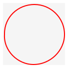

Assignment 7: Nordle
Goals: Design a game in Java using all we’ve learned so far this year.
You should submit one .java file containing the solution to this problem.
Be sure to properly test your code and write purpose statements for your methods. A lack of tests and documentation will result in a lower grade! Remember that testing requires you to make some examples of data in an examples class.
Nordle
You are going to design Nordle, which is like Wordle, but with n-many games running at once.
In our game, the game will not always be about words that are 5 letters long.
Before doing any design for Nordle, though, you will fully implement Wordle!
Designing Wordle
To begin, play Wordle to get a feel for the game if you are already unfamiliar.
In Wordle, players enter words one letter a time, in an attempt to guess the secret word. To enter a word once it’s fully typed out, players press enter. Letter strokes that would make the word longer than the guessed word are ignored, as are enters before the guess is equal to the length of the secret word. Players can press backspace to eliminate letters in the current guess, but once a word is entered, it is locked in a past guess. Feedback for past guesses is on display. Non-word guesses are ignored, as are duplicate word guesses.
Note that the secret answer is randomly generated for every new game, and in our games
Your game will use the javalib.funworld library, which provides an implementation of Worlds and bigBang similar to what was used in CS 1. Read the documentation carefully for more information.
The Feedback
The feedback for a given guess is given in the form of assigning a color to each letter in the guess. Green, meaning the letter was correct and in the correct place; yellow, meaning the letter is in the secret word but in the wrong place; and grey, meaning the letter is not in the correct word (sort of: read on for more detail).
Let’s say the secret word is

and the player enters "bacaaa". The feedback would be:
b and c are both in the secret word but in the wrong place. The first two a’s in the guess align with an a in the secret word. The third a matches to an a in the secret word. There are only 3 a’s in the secret word, so the last a in the guess word is displayed as incorrect.
Exact matches are only counted for letters that appear in the exact same place in the guess and the secret word.
The letters in the guess sequence that are part of the exact matches take precedence over inexact matches.
Every entry in the secret word can only be used once for an exact or inexact match.
In the feedback, letters to the left take precedence for inexact matches over letters to the right.
Be sure you can work through and understand this example. Draw appropriate lines between the secret and guessed word to see why the feedback is the way it is.
Configurability and Data Constraints
How many guesses the player gets before the game is over)
The dictionary of allowed words
One of your constructors should take in exactly these two parameters, and your program should be designed such that this data is all a player would have to change to reconfigure their gameplay experience.
The number of guesses is less than 2
The dictionary is empty
The length of words in the dictionary aren’t all the same
The length of words in the dictionary is 0
Step 1: World and Feedback Design
For your first check-in, you must design your Wordle game and any methods needed to generate feedback for a guess.
The design of Wordle, besides the feedback-generation, should be fairly straightforward. The world must contain the dictionary of allowable guesses, the number of guesses a player has, the secret word, the past guesses, and the current guess. It may also be useful to keep track of the word size. What you choose to encode as a simple string or a list of strings or a list of something more complex is ultimately up to you!
However, to design your game well, the feedback for past guesses should be encoded into how you design the data structure for past guesses. In other words, figuring out which color (green, yellow, or grey) to assign to each letter should be computed once, when a player presses enter, and should not need to be computed again. Doing the latter would place far too much logic into the makeScene method, which, when properly designed, should just involve the creation and composition of images, without much work required to figure out what image to make.
You must test your feedback generation methods, and doing so on the above example is a good idea. If that test is failing, test simpler versions. Create convenience constructor(s) so testing the feedback-creation mechanism is easy, as feedback generation should only require a correct word and a current guess to generate.
Some useful helper methods might involve removing one instance of a letter from a string and removing or replacing letters in a string that correspond to exact matches in another string. Note that when I say string here, I mean string and/or how you choose to encode a string via a list of some sort.
If you get stuck on this section, have your method return all letters as incorrect so you can move onto the other parts of the game, and return to it when you can.
Step 2: Drawing
For your second check-in, draw the world. For Nordle’s sake, your makeScene method should be extremely brief, and nearly all of your work should be making a WorldImage that you place in the middle of your scene. Delegate, and think of your game as various blocks that are placed on top of, beside, and above each other.
It will be helpful to design a method which draws a blank grid, and two which compute the total width and height of your game in pixels. Once the latter two are made, design a method which launches the game using bigBang at the appropriate window dimensions. Use this to test your image generation on various examples!
Step 3: User Interaction and Ending the Game
Use the worldEnds method to end the game. Be sure to launch the game with a tick rate of .1 to enable this type of ending the game. The world ends when the player has guessed the correct word or run out of guesses. For Nordle’s sake, be sure to compute whether or not the world ends in a helper method that just returns a boolean.
The user uses three kinds of keys to interact with the game: letters, enter, and backspace. Be sure to only produce new worlds when these keystrokes are appropriate, and return the current world state when it is not. Remember to ignore words that are not in the dictionary and to not allow for duplicate guesses. Ignore keystrokes if the game is over as well.
Finally, Nordle
The last step will be bringing it all together for Nordle. Nordle should be launched with a dictionary, similarly to Wordle, and a positive (enforce this) number of subgames to be played. The number of guesses a player is allowed is equal to the length of the words in the dictionary plus the number of subgames going on.
Use similar drawing methodologies as suggested above; that is, the composition of images via helpers and delegation. You should have a buffer between each image. You may find cropping off a final buffer helper using CropImage helpful.
Subgames that end early should ignore future keystrokes. The game is over when all subgames end. Below is an example of my implementation of Nordle that has finished.
Remember, a Nordle is essentially just a list of Wordles. Delegate, delegate, delegate!
Getters, instanceof, Casting, Exceptions, etc.
As has been explained, reliance on getters, instanceof, casting, fields of fields, and fields of parameters of another class are all poor design. The game can be designed without them, and you should avoid them. If you find you’re needing to use them, it’s a sign your code might be unideally designed.
Checking if a list’s length is 0 (outside of a data constraint check) to see if it’s empty in this game is a sign of bad design!
Remember that getFirst and getRest on lists that can be empty should be avoided, as empty lists don’t have first and rests.
Some hints
To turn a string uppercase, use the toUpperCase method.
One helpful method you will want is an String getIndex(int index) method on ILoString, which will blow up if the index is bigger than or equal to the size of the list.
A Note About Randomness
There are two ways to generate random numbers in Java. The easiest is to use Math.random(), which generates a double between 0 (inclusive) and 1 (exclusive). You can multiply this number by some integer to make it bigger, then coerce to an int to produce a random integer in the range you wish. However, this is not easily testable: you’ll get different random values every time.
The better way to generate random numbers is: First, import java.util.Random at the top of your file. Next, create a new Random() object, and use its nextInt(int maxVal) method, which will give you a random integer between zero (inclusive) and maxVal (exclusive).
This is known as a "pseudorandom number generator", since the numbers aren’t really random if they can be reliably repeated...
One of them, to be used for testing, should take in a Random object whose seed value you specify. This way your game will be utterly predictable every single time you test it.
The second constructor should not take in a Random object, but should call the other constructor, and pass along a really random object:
import java.util.Random; class YourWorld { Random rand // The constructor for use in "real" games YourWorld() { this(new Random()); } // The constructor for use in testing, with a specified Random object YourWorld(Random rand) { this.rand = rand; ... } } Now, your tests can be predictable while your game can still be random, and the rest of your code doesn’t need to change at all.
Note: while it can be helpful and important to test random elements of your game, the only randomness should occur in your constructor. If you’re finding testing this difficult, move on to other parts of the game and come back to it later.